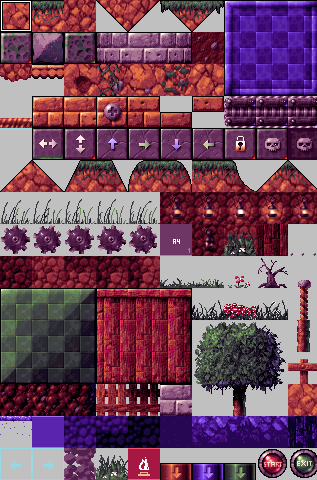

Table of contents
The aim of this editor is to have it run on modern operating systems and make it as easy as possible to make levels for Pekka Kana 2. It is supposed to get out of your way, while creating levels. Have everything important displayed cleary and be as convenient as possible. The user interface is designed with the user in mind. so that you can quickly read, or even just skim, through the manual for the most important information and get working on your custom content.
There is no getting started guide, because it simple isn't necessary!
Just go to File -> New Level, that's it. You can start working on your level.
Don't forget to place a "start" and an "exit" tile!
Screenshot
Here is a screenshot of the editor in action (click to open a bigger image):

Toolbar
| Figure 1: Create a new empty level. | Shortcut: CTRL + N |
| Figure 2: Open an existing level. | Shortcut: CTRL + O |
| Figure 3: Save the currently opened level. | Shortcut: CTRL + S |
| Figure 4: Save the currently opened level as... | Shortcut: CTRL + Shift + S |
| Figure 5: Select the brush tool. (See: Tools) | Shortcut: E |
| Figure 6: Select the eraser tool. (See: Tools) | Shortcut: R |
| Figure 7: Show or hide the sprites. | Shortcut: S |
| Figure 8: Select the current layer. (See: Layers) | Shortcut: 1 - Both |
| Shortcut: 2 - Foreground | |
| Shortcut: 3 - Background | |
| Figure 9: Select the current mode. (See: Modes) | None |
Tiles Panel
This panel shows the tileset of the currently loaded level.
You can choose a tile by clicking on it, or you can choose multiple tiles at once, by pressing a mouse button and then dragging to the right and/or down.
The selected tile/s is/are marked by the black and white square that's surrounding it/them.
To change the tileset of the level navigate to the the Properties Panel
The tiles have the following functions:
Note: The following list is taken from the manual of the official editor by Pistegamez. Original
Tiles 1-40:
Normal wall tiles.
Tiles 41-50:
Special wall tiles.
41: Special floor that is not displayed in the game.
Player or any other sprite can't fall through it.
42: Horizontal elevator.
43: Vertical elevator.
44: Trap wall (moves up when blue switch is pressed
45: Trap wall (moves right when green switch is pressed)
46: Trap wall (moves down when blue switch is pressed
47: Trap wall (moves left when green switch is pressed)
48: Lock wall. Lock wall vanishes when a key touches it.
All lock walls in a map will disappear if player collects all the keys.
49: Skull Switch Wall (foreground). If player hits a Skull Switch sprite,
this wall will disappear.
50: Skull Switch Wall (background). If player hits a Skull Switch sprite
a Skull Switch Wall (foreground) will appear in the foreground layer if this
wall is in the background layer.
Tiles 51-60:
Hill tiles.
Tiles 61-80:
Animated tiles. All these tiles work as walls, but tiles 61, 66, 71, and 76 are animated using the rest of the animated tiles.
Tiles 81-130:
Normal background tiles.
Tiles 131-140:
Water tiles. All these tiles work as backgrounds. They work as water only
if drawn to background layer.
Tiles 141-150:
Special tiles
141: Wind to the left. Draw in foreground layer.
142: Wind to the right Draw in foreground layer.
143: Smoke tile
144: Hideout tile (some sprites duck behind this tile)
145: Fire tile (goes out when orange switch is pressed)
146: Orange switch. Draw in foreground layer.
147: Blue switch. Draw in foreground layer.
148: Green switch. Draw in foreground layer.
149: Start tile. Every map needs at least one. Draw in foreground layer.
150: Exit tile. Every map needs at least one. Draw in foreground layer.
Level Panel
The Level Panel is the big one in the middle of the editor, where the background, the tiles and the sprites of the level are drawn.
It will also show your currently selected tile/s or sprite.
Depending on your selected tool you can add, erase and select, one or multiple, tiles from/to the level. (See Tools)
To add a tile to the level, navigate to the Tiles Panel, select the tile/s you want and simply press, or drag, the left mouse button on the level panel.
To add a sprite, navigate to the Sprites Panel, add or select a sprite and press, or drag, on the level panel.
To remove a sprite from the level, simply press or drag on the level panel.
Properties Panel
 In this panel you can change the properties of your level.
In this panel you can change the properties of your level.
| Name: | The name of your level, that is going to be displayed in the game. |
| Creator: | Your name, the creator of the level. |
| Tileset: | The tileset of the level. You can change it by pressing the "Select" button. |
| Background: | The Background of the level. You can change that by pressing the "Select" button, too. |
| Music: | The soundtrack that is going to be played, while playing the level. Change it by pressing "Select". |
| Level nr. | The number of this level in your episode. |
| Time (sec): | The time limit of the level, in seconds. Set to zero if you don't want to have one. |
| Scrolling: | The way the level will scroll in game. (Horizontally, Vertically or both) |
| Special: | The weather effects of the level. Normal means none. |
| Icon: | The icon of your level, on the map where you choose the next level to play. |
| Position: | Set the position of your level on the level select map. |
Sprites Panel
 In the sprites panel you can add and remove sprites from/to the level.
In the sprites panel you can add and remove sprites from/to the level.
Pressing the "Set Player" button does that. It sets the selected sprite to the player of the level.
To know which sprite is the player, simply look at the list. The sprite where "Player?:" is set to "true" is the playable character.
The shortcut too add a sprite is: CTRL + A
 The episode panel will list all the files an episode, that you can create or load.
The episode panel will list all the files an episode, that you can create or load.
The name of the currently loaded episode will appear next to the "Episode:" label.
All the files that belong to the episode will be displayed in the list, in the middle of the panel.
Level are ordered by level number, in ascending order. (1 to X).
The "Remove" button removes the level from the episode. When removing an episode you are asked if you also want to delete the file from your disk.
In legacy mode you can add up to 50 levels to your episode, in enhanced you can decide, but are still limited by the version of your game. (See: Modes)
Settings Dialog

The Settings dialog is accessible via the Extras -> Settings menu.
Path to Pekka Kana 2 is exactly that. It is the path to your installation of Pekka Kana 2.
This is needed to find the games tilesets, backgrounds, music, etc. Click the "Browse" button to change it.
In the "On start" section you can choose what the editor should do after it was executed.
"Load last episode" loads the last episode that you've worked on.
"Create empty level" creates an empty level, with the default setings. (Tileset, background, music, etc.)
"Level limit per episode" limits the amount of levels you can add to your episode. (See: Modes)
Tools
Currently there are two tools available:
Brush:
If you have selected one or multiple tile/s from the Tiles Panel you can add them to your level, by pressing the left mouse button, or holding it down and dragging your mouse.
By pressing the right mouse button once you select the tile that's laying under the mouse cursor.
By holding the right mouse button and dragging it down and/or to the right you can select multiple tiles from the level.
Eraser:
Press any mouse button to delete the underlaying tile from the level.
Layers
There are 2 layers to choose from, as well as the option to select both.
| Both: | This will place the currently selected tile/s on both layers. |
| Foreground: | This will place the currently selected tile/s only on the foreground. |
| Background: | This will place the currently selected tile/s only on the background. |
Note: If you select one or multiple tile/s from the layer "both" it will select the tile from the foreground AND the background.
Modes
There are two modes available. These determine the limit for the amount of levels you can add to an episode.
| Legacy: | In this mode you can add up to 50 levels to an episode. This is a limitation of Pekka Kana 2. |
| Enhanced: | In the enhanced mode you can set the limit yourself. It defaults to 100. |
| Note: You have so set the limit to something that you version of the game can support. You can't use a higher limit than that, that's allowed in your version of Pekka Kana 2. |